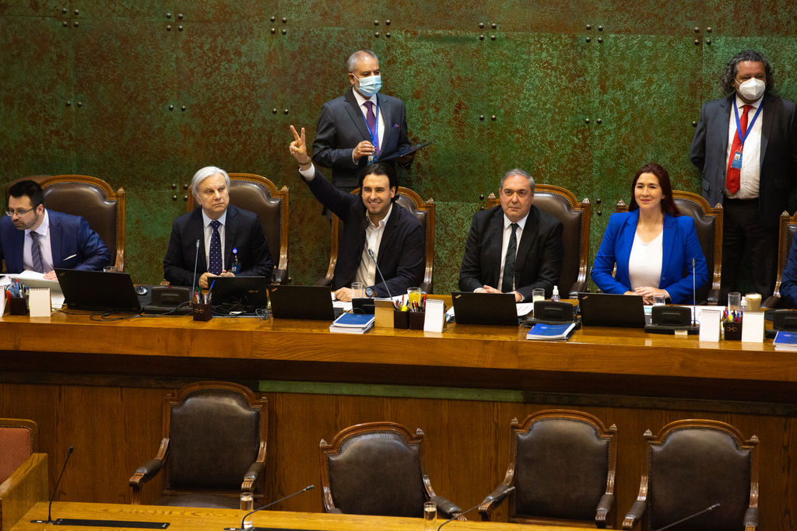

WEBSTORY · POLÍTICA CHILENA · 1989–2025
WEBSTORY · POLÍTICA CHILENA · 1989–2025
Desde el retorno a la democracia, la representación política en Chile ha experimentado profundas transformaciones. Lo que comenzó como un sistema dominado por dos grandes coaliciones evolucionó, tras la reforma electoral de 2017, hacia un Congreso caracterizado por la presencia de múltiples fuerzas políticas que compiten por la representación ciudadana. Este cambio se explica por las diferencias entre los dos sistemas electorales que han regido las elecciones parlamentarias desde 1989. El sistema binominal (1989-2017) se caracterizó por la elección de dos representantes en cada uno de los 60 distritos, conformando una Cámara de Diputados de 120 escaños. Su diseño favorecía a las dos principales coaliciones políticas, la Concertación y la Alianza, dificultando el acceso de partidos pequeños o candidaturas independientes al Congreso.
Esta situación se refleja en los resultados electorales del período, donde la competencia estuvo concentrada casi exclusivamente en ambos bloques. Además, una lista que obtenía la primera mayoría podía terminar con el mismo número de representantes que la segunda lista, salvo que duplicara su votación, regla que incentivaba la estabilidad de las grandes coaliciones y limitaba la representación de otras fuerzas políticas. En contraste, el sistema proporcional (2017-actualidad) distribuye los escaños de acuerdo con la proporción de votos obtenida por cada partido o pacto electoral. En consecuencia, las listas con mayor respaldo ciudadano acceden a una mayor cantidad de representantes, pero sin excluir a las fuerzas políticas con menores porcentajes de votación. Este mecanismo ha favorecido una representación parlamentaria más diversa, facilitando el ingreso de nuevos partidos y candidaturas independientes, y contribuyendo a una mayor fragmentación del sistema político.
La Concertación y la Alianza representaron el orden institucional y el control legislativo durante casi tres décadas bajo las rígidas rules del sistema binominal. Mientras la Concertación se caracterizaba por reunir partidos de orientación más progresista, comprometidos con los derechos humanos y la democracia, la Alianza, bloque que agrupaba a los principales partidos de la derecha tradicional, se caracterizaba por mantener posturas de negacionismo respecto de los acontecimientos ocurridos durante la dictadura e, incluso, por la presencia de sectores más extremos, como la UDI. En la actualidad, el espacio que antes ocupaba la Alianza es representado por partidos como el Partido Nacional Libertario, el Partido Social Cristiano y el Partido Republicano, lo que refleja un cambio en la configuración de la derecha chilena.
Con la llegada del Frente Amplio, el escenario político dentro de la Cámara de Diputadas y Diputados cambió significativamente. En las elecciones de 2017, esta coalición logró instalarse como una fuerza relevante en el Congreso, coincidiendo con la implementación del nuevo sistema electoral proporcional. Este cambio contribuyó a romper el histórico duopolio conformado por Chile Vamos (sucesor de la Alianza) y la Nueva Mayoría (sucesora de la Concertación). Posteriormente, se incorporaron nuevas fuerzas políticas provenientes de distintos sectores ideológicos, como el Partido Republicano, el Partido Social Cristiano, el Partido de la Gente y el Partido Nacional Libertario, ampliando la oferta de representation política disponible para la ciudadanía.
A finales de la década de 1980, con el término del régimen militar de Augusto Pinochet, los actores políticos chilenos enfrentaron el desafío de reconstruir el sistema de partidos y reorganizar las coaliciones que agruparían a las distintas fuerzas políticas tras 17 años de dictadura. En ese contexto surgieron dos grandes bloques que dominarían las elecciones parlamentarias de 1989: la Concertación de Partidos por la Democracia y la Alianza. La Concertación estuvo liderada por la Democracia Cristiana (DC) e integrada, entre otros, por el Partido por la Democracia (PPD), el Partido Socialista (PS), el Partido Radical (PR), el Partido Socialdemócrata (PSD), la Izquierda Cristiana (IC), el Movimiento de Acción Popular Unitario (MAPU), el Partido Liberal (PL), el Partido Humanista (PH), Los Verdes y Alianza de Centro. Por su parte, la Alianza estuvo encabezada por la Unión Demócrata Independiente (UDI) y Renovación Nacional (RN), incorporando además, según el periodo electoral, a partidos como el Partido Nacional (PN), la Unión de Centro Centro (UCC) y el Partido del Sur.
En este escenario de reconstrucción democrática nacieron los principales pactos políticos que competirían en las elecciones parlamentarias de 1989, inaugurando un ciclo político marcado por el sistema electoral binominal, cuyas reglas favorecieron la consolidación de dos grandes coaliciones durante gran parte del período democrático.
Años de dictadura precedieron la reorganización de las fuerzas parlamentarias en Chile.
La Concertación surgió como una coalición de centroizquierda que dominó la política parlamentaria durante más de cinco elecciones consecutivas. Su éxito se sustentó en una sólida disciplina interna y en una estrategia electoral altamente compatible con la lógica del sistema binominal. Su mejor desempeño se registró en las elecciones de 1993, cuando obtuvo 70 de los 120 escaños de la Cámara de Diputados, consolidando su posición como la principal fuerza política del Congreso Nacional.
Por su parte, la Alianza, integrada principalmente por la Unión Demócrata Independiente (UDI) y Renovación Nacional (RN), además de otros partidos según el periodo electoral, alcanzó 50 escaños en esos comicios. La amplia representación obtenida por ambas coaliciones evidenció cómo el sistema binominal favorecía la concentración de la representación parlamentaria en dos grandes bloques, dificultando el ingreso de partidos pequeños e independientes. Como resultado, durante gran parte del período comprendido entre 1989 y 2017, la competencia política estuvo dominada por estas dos coaliciones, un escenario muy distinto al observado en la actualidad bajo el sistema proporcional.
V 1: El gráfico de barras muestra la prolongada estabilidad de dos coaliciones con el sistema binominal.
V 2: El gráfico de barras muestra el aumento de coaliciones con el sistema proporcional.
El sistema permitía que la lista que obtuviera el segundo lugar, siempre que alcanzara aproximadamente un tercio de los votos en un distrito y la lista vencedora no duplicara su votación, asegurara uno de los dos escaños en disputa. En consecuencia, era poco frecuente que una misma coalición obtuviera ambos escaños de un distrito. Una de las principales excepciones ocurrió en las elecciones de 1993, cuando la Concertación logró 70 escaños en la Cámara de Diputados gracias a una serie de doblajes en distritos estratégicos. Durante este período, partidos con un importante respaldo electoral, como el Partido Comunista (PC), obtuvieron entre un 5 % y un 9 % de los votos a nivel nacional en distintas elecciones.
Sin embargo, debido a las reglas del sistema binominal, no consiguieron representación en la Cámara de Diputados durante la década de 1990 ni en gran parte de los años 2000. En este contexto, la competencia electoral no se producía únicamente entre la Concertación y la Alianza, sino también al interior de cada coalición. En la Concertación, partidos como la Democracia Cristiana (DC) y el Partido por la Democracia (PPD) competían entre sí por el escaño que correspondía al pacto. Del mismo modo, en la Alianza, la Unión Demócrata Independiente (UDI) y Renovación Nacional (RN) disputaban la representación de su coalición en cada distrito.
Haz clic en cada año electoral para seguir la progresión:
Visual 3: Cronología interactiva que exhibe el nacimiento, mutación y fin de los pactos en el hemiciclo.
No todos los bloques lograron resistir el peso de las urnas. La ley de partidos políticos chilena establece castigos rigurosos para aquellas colectividades que no alcancen los quórums de votación mínimos requeridos por elección (como el 5% de votos válidos o la elección de al menos 4 parlamentarios), dictaminando su disolución inmediata.
Esfuerzo de centroderecha independiente que desapareció de forma abrupta tras no consolidar presencia institucional estable frente a los grandes bloques.
Coaliciones de corte ecologista y humanista sufrieron disoluciones recurrentes por ley al no lograr consolidar el porcentaje mínimo en múltiples distritos.
La mutación definitiva de la Concertación en 2013 marcó el término legal e histórico del bloque tradicional tras las tensiones de su propio eje político.
En 2017 se puso fin definitivo al histórico Sistema Binominal, implementando un nuevo régimen electoral de carácter proporcional. Este cambio de reglas de juego barrió con los incentivos que forzaban la unidad histórica de los grandes bloques institucionales. Mientras el sistema binominal premiaba la concentración de votos en dos listas masivas mediante la exigencia de doblajes matemáticos, el sistema proporcional abrió la posibilidad de obtener escaños de manera directamente proporcional a la votación total del pacto, disminuyendo drásticamente las barreras de entrada para fuerzas independientes y alternativas.
Distritos electorales
Diputadas y diputados
Pactos con escaños ganados
La implementación del sistema electoral proporcional flexibilizó las condiciones de acceso a la representación legislativa. En las elecciones de 2017, el Frente Amplio se convirtió en la principal fuerza política emergente del nuevo escenario al obtener 20 escaños en la Cámara de Diputados, consolidándose como un actor relevante en el Congreso Nacional.
Su irrupción modificó el equilibrio de fuerzas dentro de la izquierda chilena y evidenció los efectos del nuevo sistema electoral. A diferencia del período binominal, el acceso a la representación parlamentaria dejó de estar concentrado casi exclusivamente en las dos grandes coaliciones tradicionales, favoreciendo la incorporación de nuevas fuerzas políticas al Congreso.
"El sistema binominal tendía a forzar pactos; el nuevo sistema proporcional abrió la compuerta a la diversidad... y con ella, a una aguda atomización partidista."
Tras la irrupción definitiva de colectividades jóvenes como el Frente Amplio, el recambio generacional y la diversificación de perfiles en el hemiciclo se volvieron evidentes. El ingreso de rostros nuevos transformó tanto el lenguaje político como las prioridades de la agenda legislativa de la Cámara Baja.

Fotografía del nuevo hemiciclo y la entrada de las bancadas transformadoras al Congreso.
Haz clic en el simulador para reproducir de forma visual cómo el Congreso atomizó su representación en los últimos ciclos políticos:
Partidos políticos e identidades independientes disputan y fragmentan de forma constante las votaciones bajo la legislación proporcional, ralentizando los acuerdos transversales.
La comparación directa entre las fuerzas presentes en el Congreso de 1989 y la atomización de 2025 ilustra de forma clara la transición desde un duopolio ordenado a un mosaico complejo.
Hoy en día, las dos alianzas gobernantes históricas carecen del control absoluto de las votaciones. Colectividades con identidades específicas o liderazgos de carácter marcadamente personalista modificaron las dinámicas internas de debate en la Cámara.
La composición parlamentaria actual ofrece mayores niveles de representatividad, pero el constante desborde de fuerzas impone desafíos severos a la gobernabilidad y la construcción de acuerdos nacionales firmes.